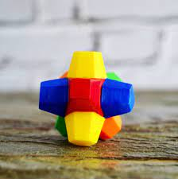

Everlasting Gobstoppers

How to Make an Everlasting Gobstopper
Colorful, jawbreaker-like candies that never get smaller or lose their flavor.
Ingredients
Below you will find everything needed to make your own everlasting gobstopper.
- Sugar
- Corn syrup
- Water
- Assorted flavored extracts (such as cherry, orange, lemon, etc.)
- Food-grade essential oils (for intense flavors)
- Food coloring (various colors)
- Confectioner's glaze or edible shellac for a shiny finish
Directions
- Prepare Ingredients:
- Measure all the ingredients and have them ready before you start.
- Hard Candy Base:
- In a medium-sized saucepan, combine sugar, corn syrup, and water.
- Stir over medium heat until the sugar dissolves.
- Bring the mixture to a boil without stirring.
- Use a candy thermometer to reach the hard crack stage (300-310°F or 149-154°C).
- Flavorings and Colors:
- Once the hard candy base is ready, divide it into smaller portions.
- Add different flavored extracts and food coloring to each portion. Mix well.
- Shaping the Candy:
- Pour small amounts of each colored and flavored candy onto a silicone mat or parchment paper.
- Allow the candy to cool slightly and start shaping it into layers, creating a visually appealing design.